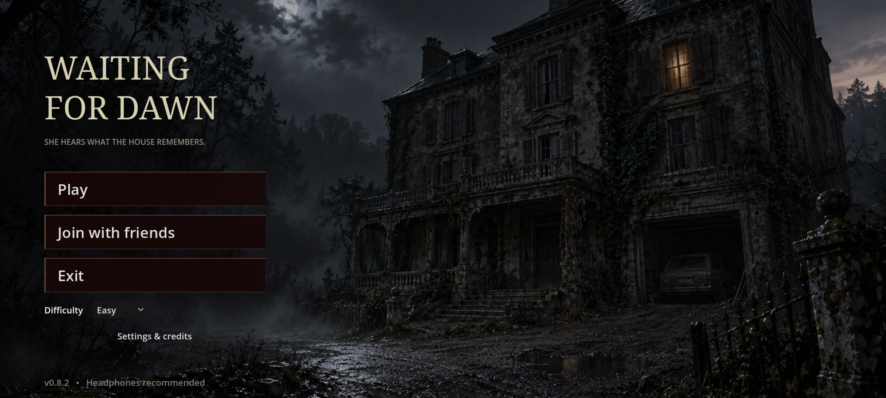
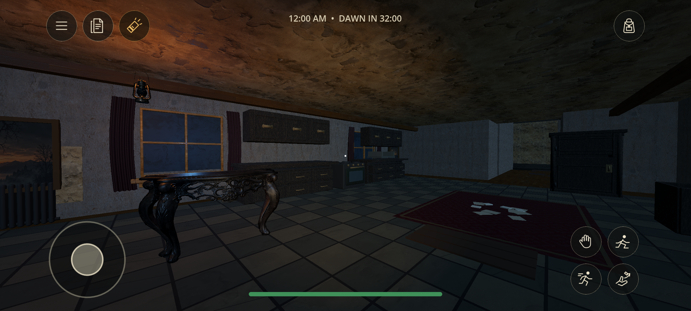
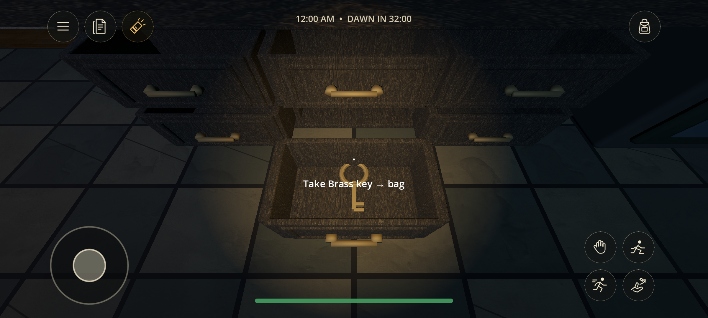
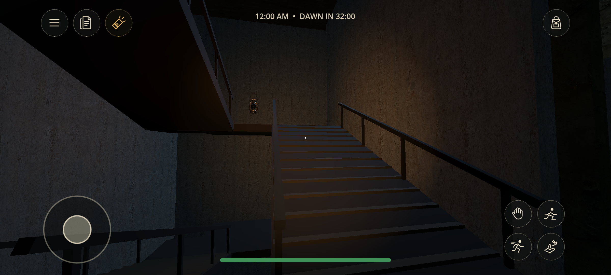
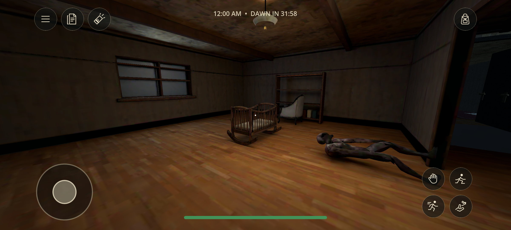
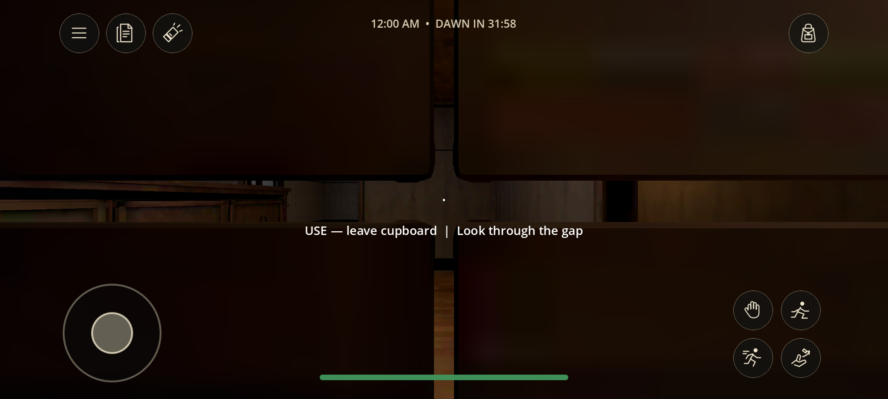
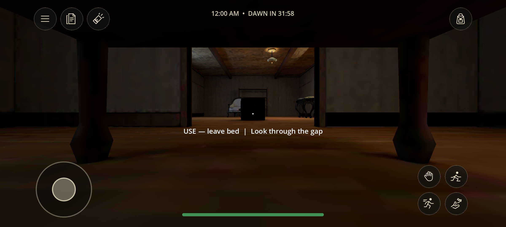
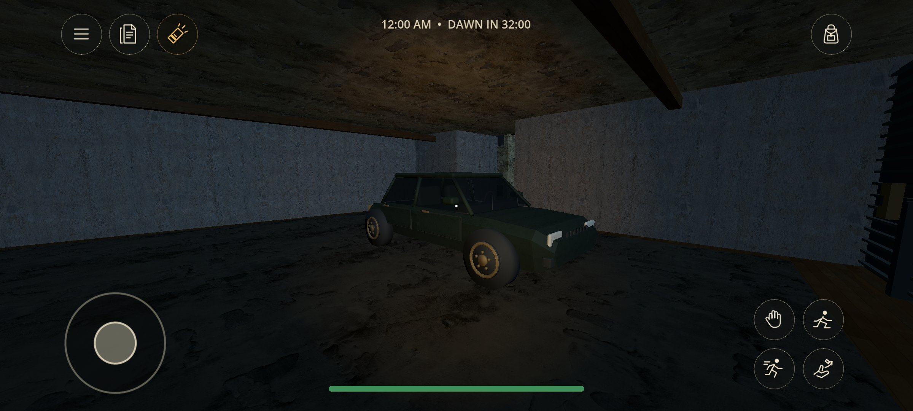
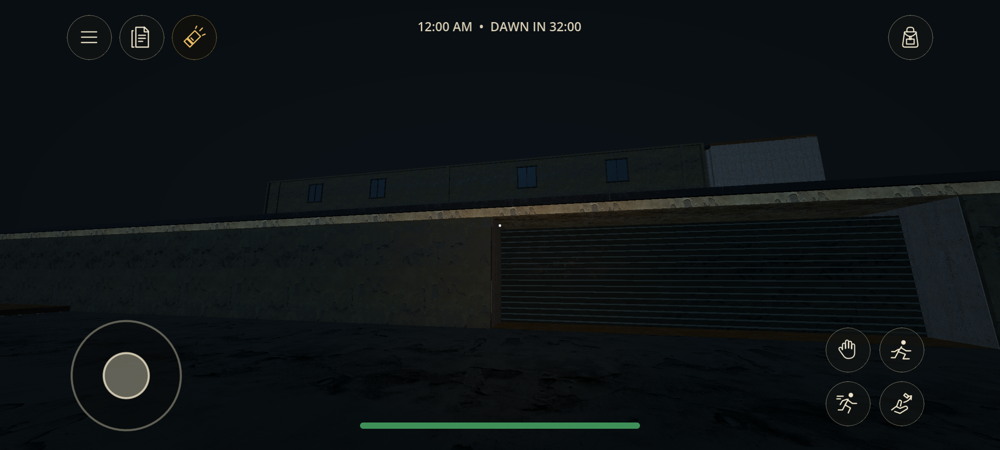

Waiting for Dawn · 0.8.2
Actual Android emulator captures, at 2400 × 1080. These show the playable repair build, not Blender previews or generated concept art. The home background is an illustration; gameplay scenes use the runtime models.
Full key traversal, ghost stair/noise regressions, four-peer endings and Android-to-Windows synchronization passed. Physical-phone touch, performance, audio and Wi-Fi still need testing. The room and car models remain modest mobile assets; the supplied photoreal references are not achieved.
Test record · APK release

Home screen — Play, Join with friends and Exit.
Kitchen — exported furniture, opening storage and aged surfaces.
Open drawer — a visible key is taken with a second Use action.
Enclosed stairs connect the stacked floors.
The native Blender nursery in the Android runtime.
Wardrobe eye slit, viewed from inside.
The under-bed camera and exit prompt.
Replacement car in the ground-floor garage.
Rear exterior and garage shutter.